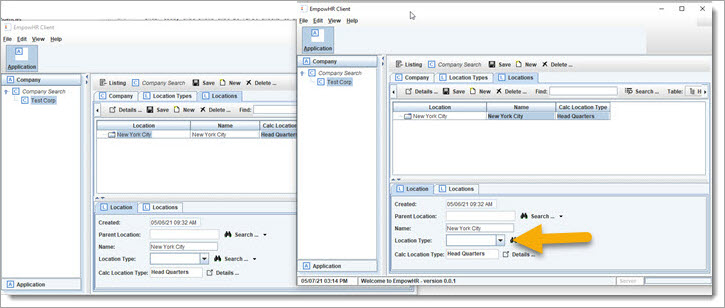

Reactive
Run two clients, and go to the company location that was created.

Now, change the
location type and notice how the other UI is automatically updated.
 Discuss & Learn: The change causes a "reaction", causing the calcLocationType to
be redisplayed on both programs. This behavior is described as an "observable & reactive object model", and is an important feature of the OA libraries. This allows
any of the model objects to be distributed and synchronized across servers - realtime or eventually.
Discuss & Learn: The change causes a "reaction", causing the calcLocationType to
be redisplayed on both programs. This behavior is described as an "observable & reactive object model", and is an important feature of the OA libraries. This allows
any of the model objects to be distributed and synchronized across servers - realtime or eventually.